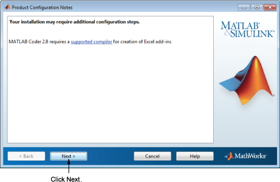

Depending upon which products you install, the installer might display a dialog box containing several types of information:
Product configuration information — Certain products require additional configuration. If you installed one of these products, the installer lists the configuration commands in this dialog box. You can copy these command to your system clipboard for use after the installation is completed.
Click Next to proceed with the installation.
